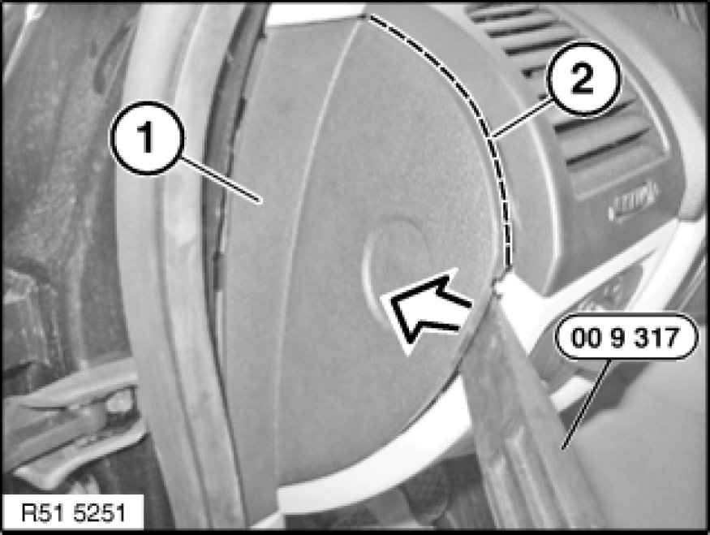
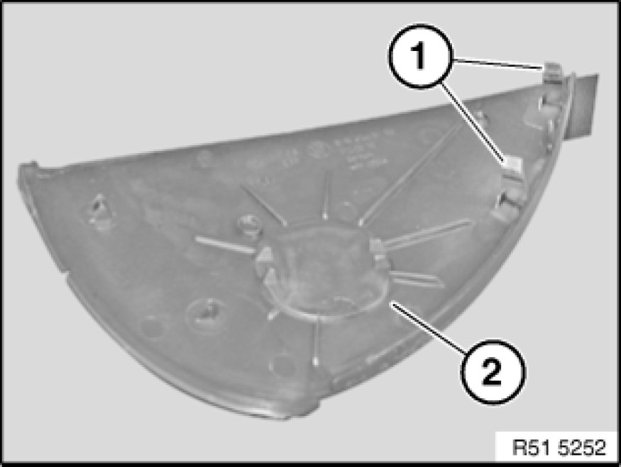

51 45 ... Replacing Side Cover on Instrument Panel
51 45 ... - Replacing side cover on instrument panel

Special tools required:

Necessary preliminary tasks:
- Pull off mucket from front door in covered area

Unclip cover (1) with special tool 00 9 317 in direction of arrow from instrument panel trim.
If necessary unfasten plug connection.
Installation:
Make sure sealing lip (2) is correctly seated in dashed area.

Retaining clips (1) of cover (2) must not be damaged.

Replacement:
- If necessary, modify or replace switch for front passenger airbag deactivation 61 31 038 Removing and Installing/Replacing Switch for Passenger Airbag Deactivation